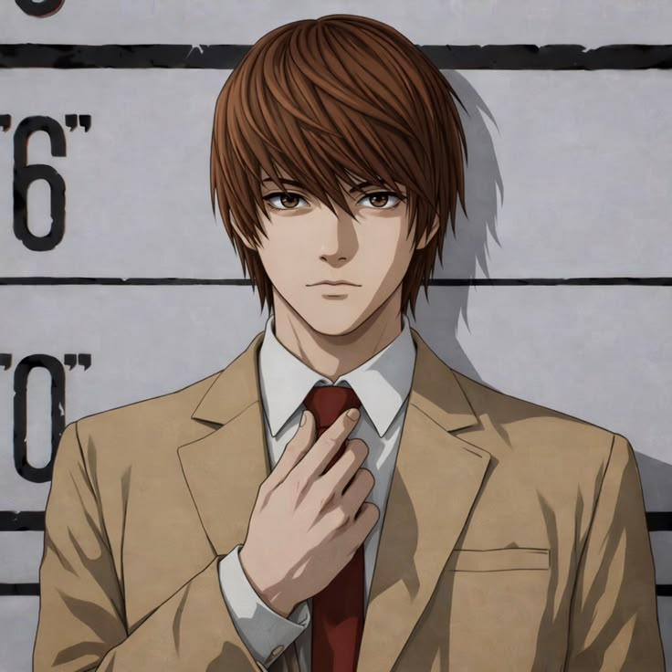
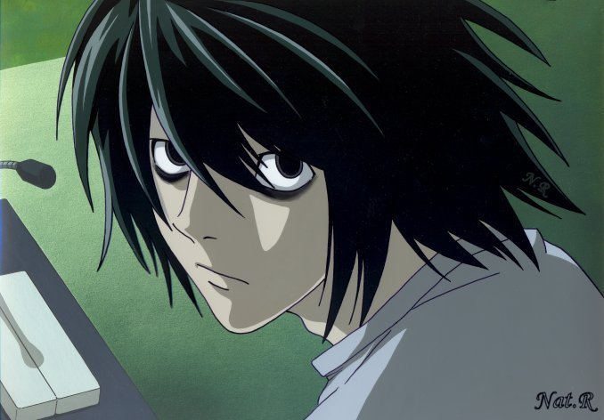
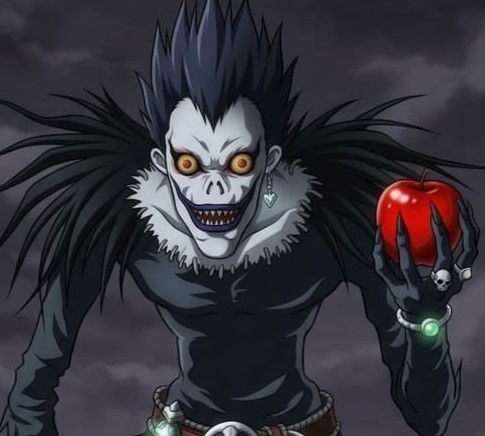
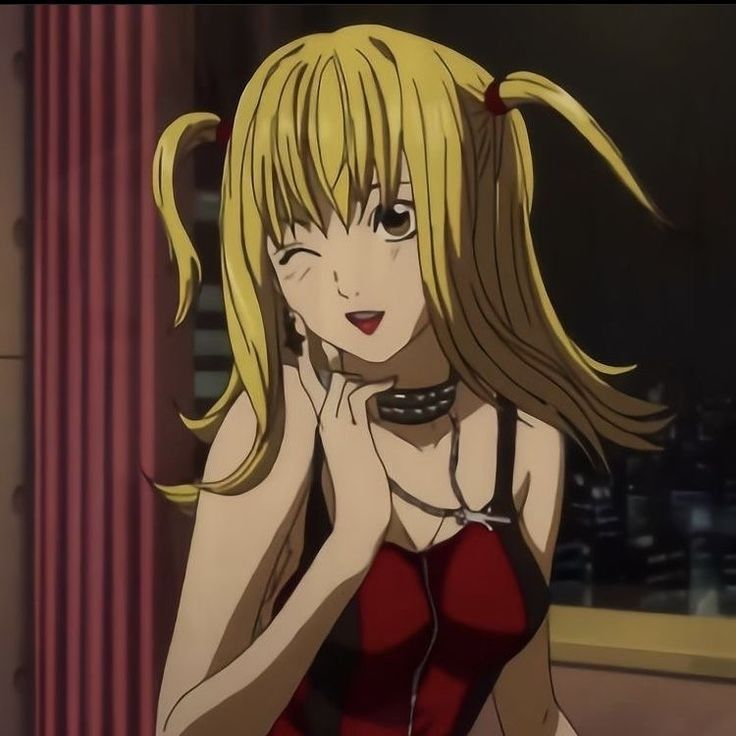
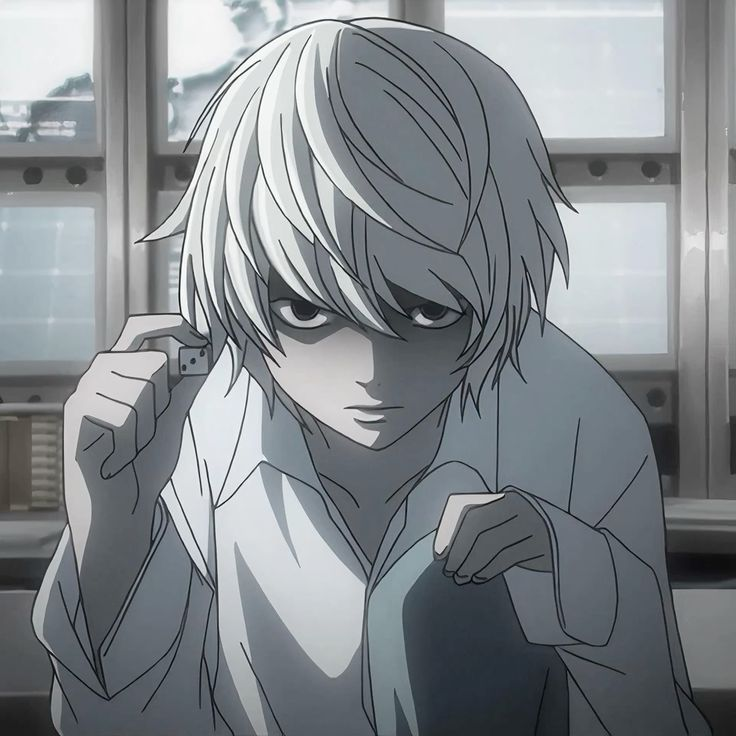
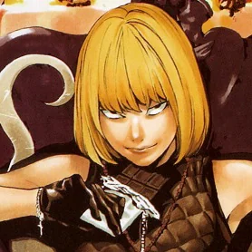
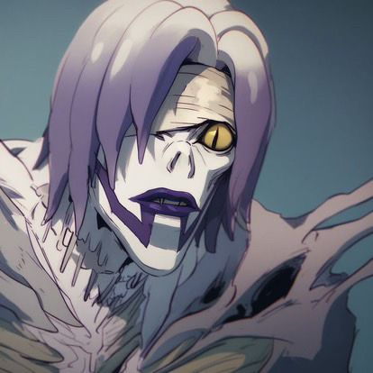
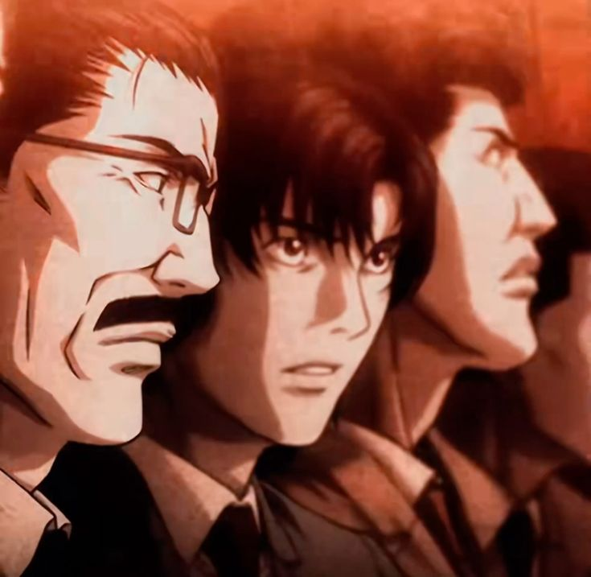

"This world is rotten,
and those who are rotting it deserve to die.
Someone Has To Do It, So
Why Not Me?"
- Light Yagami
Written by - Tsugumi ohba
Illustrated by - Takeshi Obata
Original run - December 1, 2003 – May 15, 2006
Genre -
( shōnen )
Mystery,
Psychological thriller,
Supernatural thriller.

IMDb RATING: 8.9/10
Country of origin -
Japan
Languages -
Japanese / English

Light Yagami (夜神 月 / Yagami Raito) is the main character of Death Note.
A brilliant student,
he
finds the Death Note and becomes Kira,
using it to kill criminals and create a world where
he
rules as its god.

L (エル・ローライト / Eru Rōraito) is the world's greatest detective.
Known for his unique habits and
brilliant mind, he is determined to catch Kira,
leading to an intense battle of wits with
Light
Yagami.

Ryuk (リューク / Ryūku) is a bored Shinigami who drops the Death Note into the human world for fun.
Loving apples and chaos, he watches Light Yagami's journey unfold with amusement.

Misa Amane (弥 海砂 / Amane Misa) is a famous idol and the Second Kira.
With Shinigami Eyes and
unwavering devotion to Light,
her cheerful charm hides a dangerous determination.

Near (ニア / Nate River) is L's brilliant successor. Calm, analytical,
and always playing with
toys, he leads the final investigation to uncover Kira's true identity.

Mello (メロ / Mihael Keehl) is L's ambitious successor. Bold, unpredictable,
and always
carrying chocolate, he uses dangerous methods to catch Kira
and outshine Near

Rem (レム / Remu) is a powerful Shinigami who deeply cares for Misa Amane.
Calm and selfless,
she will risk everything to protect the one she loves.

Japanese Task Force is the elite police team dedicated to capturing Kira.
Led by Soichiro
Yagami, its members risk everything
as they unravel one of history's deadliest mysteries.

Naomi (南空ナオミ, Misora Naomi) is very intelligent. Unfortunately, she eventually lets her feelings
get in the way of her
investigative abilities. However, she also tends to be incredibly cautious, using an alias when
meeting Light Yagami

( manga writer )
Tsugumi Ohba (大場 つぐみ, Ōba Tsugumi) is a Japanese manga writer. They are the writer and creator of Death Note, which they worked on with manga artist Takeshi Obata.
Ohba's real identity is a closely guarded secret, and the real name, gender, and date of birth of the author are undisclosed. Ohba is commonly given male pronouns for English translations, but their gender has not been verified.
“I decided from the beginning that right and wrong wouldn't be a part of Death Note.”
— Tsugumi Ohba
( manga artist )
Takeshi Obata (小畑 健, Obata Takeshi) is a Japanese manga artist. He is the artist of Death Note, which he worked on with manga writer Tsugumi Ohba.
Obata is best known as the artist of Hikaru no Go, for which he received the Shogakukan Manga Award in 2000 and the Tezuka Osamu Cultural Prize in 2003,[5] and for Death Note. His style is rare among shōnen artists, not only for the detail of his drawings, but in his penchant for fashion; the characters he draws often wear stylish clothes and trendy items like the latest fashionable scarf, tie, or handbag.